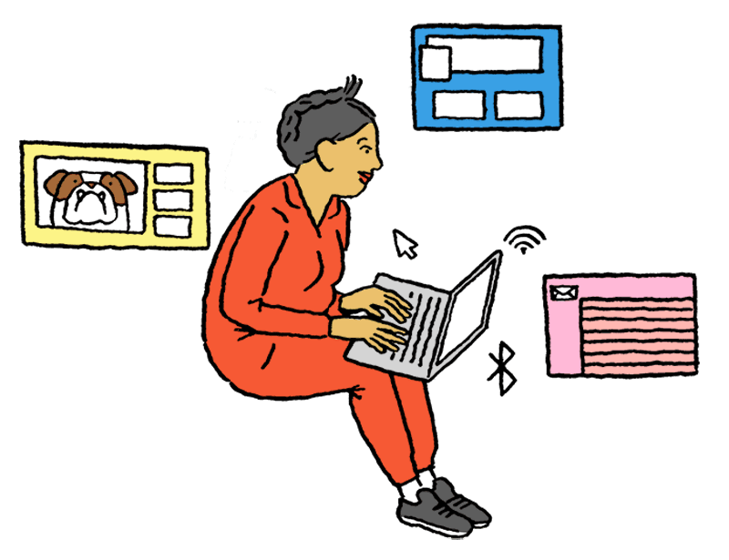

Tài khoản:
Tài khoản: Tài khoản:
Tài khoản: Chủ đề:
Chủ đề:
Tại sao Quickrep tồn tại
Quickrep của nhiệm vụ là để chia sẻ và phát triển kiến thức của thế giới. Một số lượng lớn các kiến thức nào có giá trị cho nhiều người là hiện chỉ có sẵn cho một số-hoặc khóa trong đầu của người dân, hoặc chỉ có thể truy cập để chọn các nhóm. Chúng tôi muốn kết nối những người có kiến thức để những người cần nó, để mang lại cùng những người có quan điểm khác nhau để họ có thể hiểu nhau hơn, và để trao quyền cho tất cả mọi người để chia sẻ kiến thức của họ vì lợi ích của phần còn lại của thế giới.
Tập trung xung quanh một câu hỏi
Trái tim Quickrep là câu hỏi những câu hỏi mà ảnh hưởng đến thế giới, những câu hỏi mà giải thích các sự kiện thế giới gần đây, câu hỏi hướng dẫn cuộc sống quan trọng quyết định và câu hỏi cung cấp cái nhìn sâu vào lý do tại sao những người khác suy nghĩ khác nhau. Quickrep là một nơi mà bạn có thể đặt câu hỏi bạn quan tâm và nhận được câu trả lời là tuyệt vời.
Quickrep có chỉ có một phiên bản của mỗi câu hỏi. Nó không có một phiên bản cánh trái, một phiên bản cánh phải, một phiên bản Tây và một phiên bản đông. Quickrep tập hợp mọi người từ các thế giới khác nhau để trả lời các câu hỏi tương tự, trong cùng một vị trí — và để học hỏi lẫn nhau. Chúng tôi muốn Quickrep là nơi để tiếng nói ý kiến của bạn bởi vì Quickrep là nơi mà các cuộc tranh luận đang xảy ra. Chúng tôi muốn trả lời Quickrep để là câu trả lời dứt khoát cho mọi người mãi mãi.
Hiểu thế giới và những người ở trong đó
Quickrep có nội dung bạn sẽ cảm thấy tốt về có đọc. Quickrep sẽ giúp bạn hiểu tại sao trên thế giới hoạt động theo cách nó thực hiện, lý do tại sao mọi người hành xử theo cách họ làm và những gì chúng tôi có thể làm để làm cho thế giới tốt hơn. Quickrep cung cấp một nguồn cấp dữ liệu cá nhân sâu sắc câu trả lời cho câu hỏi bạn đã không nhận ra bạn nên yêu cầu.
Câu trả lời của quora đến từ những người thực sự hiểu các vấn đề và có kiến thức tay đầu tiên. Quickrep có chỗ đọc Barack Obama trên thỏa thuận Iran, các tù nhân trên cuộc sống trong tù, các nhà khoa học về sự nóng lên toàn cầu, sĩ quan cảnh sát trên làm thế nào để ngăn chặn kẻ trộm, và nhà sản xuất TV trên như thế nào cho thấy họ đang thực hiện. Quickrep là nơi để đọc những người truyền cảm hứng như Gloria Steinem, Stephen Fry, Hillary Clinton, Glenn Beck, Sheryl Sandberg, Vinod Khosla, và Gillian Anderson trực tiếp trả lời những câu hỏi nhất muốn họ để trả lời. Quickrep là nơi bạn có thể đọc quan trọng những hiểu biết chưa bao giờ chia sẻ bất cứ nơi nào khác, từ những người bạn không bao giờ có thể đạt được bất kỳ cách nào khác.